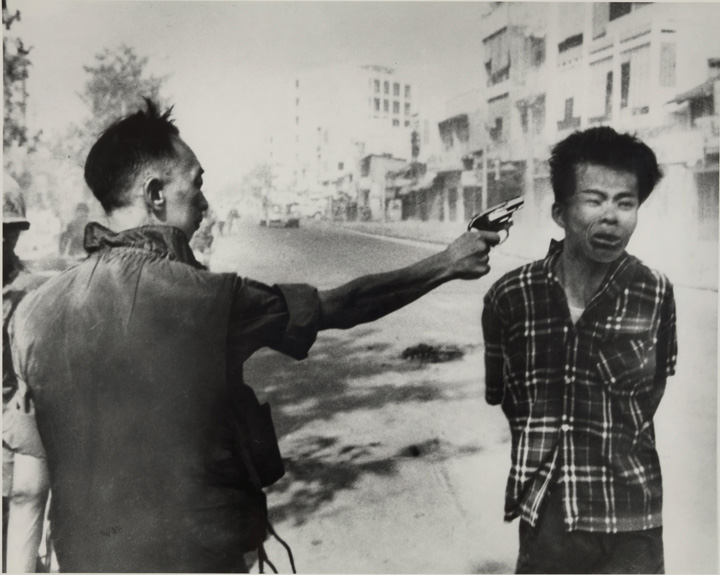

After reading this section, you should be able to answer the following questions:
In this section we move from the makers of US foreign and national security policies to the policies they have made.
Two visions have competed for how the United States should orient itself to world politics. They are isolationism and internationalism. IsolationismBelief that US national interests are best served by avoiding involvement with foreign countries., the policy of trying to stay aloof from foreign entanglements, has long roots in American foreign policy.Selig Adler, The Isolationist Impulse (New York: Praeger, 1957). Many date it back to George Washington’s Farewell Address, which warned Americans to “steer clear of permanent alliances with any portion of the foreign world.”
During the period between World War I and World War II, the United States pursued a largely isolationist foreign policy. It refused to join the League of Nations, and Congress passed a series of bills in the 1930s that imposed a policy of neutrality on the United States in foreign conflicts.
Isolationism ended with US involvement in World War II. It may regain some favor now as Americans react negatively to the financial and human cost of involvement in Iraq and Afghanistan. Media stories about outsourcing, in which American companies give the jobs of their American employees to low-paid workers overseas, may add to the isolationist impulse.
Meanwhile, internationalism reigns. InternationalismBelief that US national interests are best served by involvement with foreign countries. means involvement in events beyond one’s borders to accomplish and protect the national interest.David A. Baldwin, ed., Neorealism and Neoidealism: The Contemporary Debate (New York: Columbia University Press, 1993); and Joseph S. Nye Jr., The Paradox of American Power (New York: Oxford University Press, 2002). It has dominated American foreign policy since 1955, a decade after World War II ended. Internationalists favor democratization, free trade, and a policy of global military activism designed to maintain America’s dominant position in world affairs. But specific policies have varied depending on the administration in power.
We discuss the most important of these policies: containment, deterrence, détente and arms control, and the use of military force by the United States, particularly in Vietnam and Iraq.
The World War II alliance between the United States and the Soviet Union soon gave way to a series of international crises that divided the victors into two opposing blocs. The result was a Cold WarThe rivalry and consequent arms race between the United States and its allies and the Soviet Union and its allies, which lasted from the end of World War II until the late 1980s. of the United States and its allies against the Soviet Union and other Communist countries.
The concept guiding American foreign policy in this global struggle with the Soviet Union and its allies was containmentThe US policy of vigilance and alliances to prevent the spread of Communism..John Lewis Gaddis, Strategies of Containment (New York: Oxford University Press, 1993). It held that the United States did not need to engage in a war to defeat the Soviet Union. Instead it could adopt a policy of constant vigilance and the creation of alliances in which American power would be used to contain and counter Soviet aggressive moves.
Containment Strategy
Read about containment strategy at http://www.nuclearfiles.org/menu/key-issues/nuclear-weapons/history/cold-war/strategy/strategy-containment.htm.
During the Cold War, the news media focused on the conflict between the United States and Communist countries. The main stories were the Communist takeover of China, the Korean War, US relations with Cuba, and the Vietnam War. Thus until the collapse of the Soviet Union in 1991, the US media depicted the world in general and the preceding stories in particular from the American side of the Cold War frame.
Another concept guiding US foreign and military policy during the Cold War was deterrenceThe assumption that US possession of nuclear weapons would hold the Soviet Union in check by threatening it with destruction should it engage in nuclear aggression..Patrick M. Morgan, Deterrence: A Conceptual Analysis (Beverly Hills: Sage, 1977). According to deterrence theory, nuclear weapons were too powerful and destructive to be used as instruments of warfare. They were best suited to holding an opponent (here, the Soviet Union) in check by threatening it with destruction should it engage in an act of nuclear aggression.
Deterrence strategies are designed to prevent an opponent from undertaking an objectionable course of action. It was an article of faith during the Cold War that nuclear deterrence could not be assumed to exist through the possession of a large nuclear arsenal. The United States adopted a second strike strategy: to deter an attack by possessing the capability to absorb an enemy’s nuclear attack and retaliate with so much force that it could inflict an unacceptable level of damage on its society. Stability was assumed to be assured when both sides adopted such a strategy.
Deterrence Strategy
Read about deterrence strategy at http://americanhistory.si.edu/subs/history/timeline/different/nuclear_ deterrence.html.
This created a situation of mutual assured destructionDeterrence by being able to absorb a nuclear attack and have enough nuclear weapons left over to inflict an unacceptable level of damage on the enemy.. Thus a major concern of policymakers in the United States was that the Soviet Union not be allowed to gain a significant advantage over the United States in the size of its nuclear inventory. Because Soviet leaders shared the same goal, the result was an arms race.
As the Cold War expanded in the late 1950s and early 1960s, containment entered the third world. Already the United States had helped bring down anti-American governments in Guatemala and Indonesia. Now newly independent states in Africa and Asia became political and military battlegrounds in which the United States and Soviet Union supported competing local leaders.
The most enduring and significant extension of containment to the third world came in Vietnam.Robert L. Gallucci, Neither Peace nor Honor (Baltimore: Johns Hopkins University Press, 1975); and Leslie H. Gelb with Richard K. Betts, The Irony of Vietnam: The System Worked (Washington, DC: Brookings Institution Press, 1979). The Geneva Peace Accords envisioned a country temporarily divided at the seventeenth parallel with Communist forces in control of North Vietnam and pro-Western forces in control of South Vietnam. But North Vietnam and its Communist allies in South Vietnam began a military campaign to unify all of Vietnam.
When President Dwight Eisenhower left office, the United States had one thousand military advisors in South Vietnam. President John F. Kennedy authorized an additional fifteen thousand advisors. Under President Lyndon Johnson, the war became increasingly Americanized as US forces carried out sustained and massive bombing campaigns against the North and US ground troops began fighting in the South.
A turning point in the war came in late January 1968. Seeking a final, decisive victory, the Communists launched a massive simultaneous attack, known as the Tet Offensive, on major cities throughout the country. In the attack on Saigon, the South Vietnamese capital, soldiers temporarily invaded the American embassy grounds, in full view of American reporters and television news crews.
From a purely military standpoint, Tet was a disaster. Nearly two-thirds of the Communist troops were killed or captured. The expected popular uprising against the Americans and South Vietnamese government did not take place.
Yet by the end of the Tet Offensive, significant segments of the media and thus the American public had turned against the administration’s conduct of the war, if not the war itself. In February 1968, the Wall Street Journal warned readers in an editorial that the effort in Vietnam may be “doomed.” Following a visit to Vietnam, CBS Evening News anchor Walter Cronkite famously declared that “it is increasingly clear to this reporter that the only rational way out will be to negotiate, not as victors, but as an honorable people who lived up to their pledge to defend democracy and did the best they could.” And a special report on NBC television declared the war a failure.Editorial, Wall Street Journal, February 23, 1968, 14; CBS News Special: Report From Vietnam, February 27, 1968; and NBC News Special Report, March 10, 1968.
Even before Tet, media coverage of the war was becoming more critical. The media’s response was driven by a cumulative reaction to the “credibility gap” that had existed for many months between the optimistic statements of the administration and the military command and the experiences of reporters and soldiers in the field. This critical reporting was indexed to growing dissent within the Johnson administration and the Democratic party, evidenced by Minnesota Senator Eugene McCarthy seeking the presidential nomination on an antiwar platform. It was also represented and reinforced by images capturing the brutality and horror of the war.
Figure 17.1
The director of South Vietnam’s national police force executes a bound Viet Cong prisoner.
The photograph and television footage of the execution by the director of South Vietnam’s national police force of a Viet Cong prisoner on the streets of Saigon during the Tet Offensive helped galvanize US opposition to the Vietnam War.
Source: Photo by Eddie Adams, http://www.loc.gov/pictures/item/2009632258/.
A photo of a naked Vietnamese girl and other children fleeing napalm challenged the justification for the US involvement in Vietnam by graphically exposing the cruelty of the war on innocent children. See the legendary image at http://en.wikipedia.org/wiki/File:TrangBang.jpg.
By late March, approval of President Johnson’s “handling of the situation in Vietnam” had dropped to 26 percent and disapproval swelled to 63 percent.Gallup Organization, Vietnam War: A Compilation, 1964–1990. Public Opinion and the Vietnam War: National and International Opinion, vol. II (Princeton, NJ: Gallup, 1992). On March 31, 1968, the president announced he would not run for reelection and that US bombing of North Vietnam would be restricted.
After he took office in 1969, President Richard Nixon pursued a policy of Vietnamization. It was designed to create conditions so that by 1972 the South Vietnamese army would be able to hold its own when supported by US air and sea power. Congress held hearings and cut off some funds. There were demonstrations against the war, especially on college campuses. Nixon’s strategy failed, and in spring 1972 North Vietnam attacked South Vietnam, forcing Nixon to re-Americanize the war. By the time the war finally ended, 55,000 US troops had lost their lives in Vietnam; as many as 541,000 Americans were fighting there at the war’s height, and $150 billion was spent on the war effort.
President Nixon redirected American foreign and national security policy. He sought to minimize future Soviet challenges by treating the Soviet Union less as a rival and more as a partner in the international system. Known as détenteUS policy of cooperating with the Soviet Union within the context of continuing competition and conflict., the goal was to create a framework of limited cooperation between the two superpowers within the context of ongoing competition and conflict.Coral Bell, The Diplomacy of Détente: The Kissinger Era (New York: St. Martin’s, 1977).
Détente’s greatest success was in the area of arms control, most notably with the signing of the SALT I and SALT II agreements, which placed outer limits on the size of the American and Soviet nuclear forces.Thomas C. Schelling and Morton H. Halperin, Strategy and Arms Control (New York: Pergamon-Brassey’s Classic, 1985). These agreements slowed the arms race while maintaining the fundamental symmetry in US and Soviet nuclear forces around which deterrence had been built decades before.
President Jimmy Carter’s foreign policy emphasis on human rights pushed US–Soviet competition into the background.Robert C. Johansen, The National Interest and the Human Interest: An Analysis of U.S. Foreign Policy (Princeton, NJ: Princeton University Press, 1980); Debra Liang-Fenton, ed., Implementing U.S. Human Rights Policy (Washington, DC: United States Institute of Peace Press, 2004). He criticized the human rights abuses of leaders who had loyally stood by the United States in its containment of the Soviet Union. One of those criticized was the shah of Iran. Put into power through a coup engineered by the Central Intelligence Agency (CIA) in 1953, the shah had been one of America’s staunchest Cold War allies. But by the 1970s, he had become increasingly isolated within his own country.Stephen Kinzer, All the Shah’s Men: An American Coup and the Roots of Middle East Terror (New York: John Wiley & Sons, 2002).
In January 1979, a revolution ousted the shah, who was replaced as leader in Iran by the exiled Ayatollah Ruhollah Khomeini. When news broke in October that the shah was coming to the United States for medical treatment, Iranian militants seized the US embassy and held fifty-two Americans hostage. The Carter administration placed economic sanctions on Iran and undertook a failed hostage rescue mission in 1980. The hostages were not released until January 20, 1981, thirty minutes after Ronald Reagan became president.
The media reported the crisis night after night under such titles as “America Held Hostage.”
“America Held Hostage” Logo of ABC’s Nightline
Night after night, the media reminded American policymakers and the public of the continuing hostage situation in Iran and of the inability of the US government to end it.
View the logo at http://pdxretro.com/wp-content/uploads/2011/03/nightline-iran.jpg.
Only a few diplomats were being held hostage, not the entire nation. Nonetheless, the media depiction conveying the impression of American impotence probably precipitated the rescue mission and contributed to making Jimmy Carter a one-term president.
President Reagan rejected the notion that the United States could cooperate or work with the Soviet Union. Under Reagan, détente and arms control ceased guiding American foreign policy.
The deathblow to détente had come during the Carter administration when the Soviet Union invaded Afghanistan in 1979 in order to prop up pro-Russian Communist political forces. Within a year, the Soviet Union occupation army grew to 110,000, and it had to bear the primary responsibility for fighting the guerrillas, or Mujahedin, who were supported by US funds. American military aid to the Mujahedin rose from $120 million in 1984 to $630 million in 1987.
Support for the Mujahedin was consistent with the Reagan Doctrine that the purpose of American foreign policy not only was to contain the spread of Communism but also was to assist in bringing down Communist rulers.James M. Scott, Deciding to Intervene: The Reagan Doctrine and American Foreign Policy (Durham, NC: Duke University Press, 1996).
Most controversial was the administration’s support for anticommunist forces in Nicaragua, where the Sandinistas had overthrown forty years of arbitrary, oppressive, and corrupt family rule in July 1979. The Sandinistas were sympathetic to Cuba’s Castro and hostile to the United States. In November 1981, Reagan authorized spending $19 million to transform a small and largely ineffective fighting force into one (the Contras) that would be more capable of ousting the Sandinista regime. In response, Congress passed the Boland Amendments, which barred the use of CIA or Defense Department funds for the purpose of overthrowing the Nicaraguan government or provoking a military exchange between it and Honduras. Chafing under this restriction, the Reagan administration devised a covert plan for increasing the amount of funds available to the Contras. At the heart of the administration’s plan was a scheme to divert money to the Contras from the covert sale of weapons to Iran. When it became public, the Iran-Contra affair produced widespread and mainly critical negative media coverage and a storm of controversy.
On December 26, 1991, the Soviet Union collapsed. The end of the Cold War brought forward expressions of hope that America’s military involvement in the world might be lessened. For some this meant that a return to isolationism was possible; for others it meant that the United States would be able to engage in building democracy and promoting peaceful change.
These alternative visions of America’s role in the world were soon challenged by the reemergence of traditional national security concerns. The event that sparked this challenge was Iraq’s August 2, 1990, invasion of Kuwait. It led to the Persian Gulf War, the first major international conflict of the post–Cold War era.Michael J. Mazarr, Don M. Snider, and James A. Blackwell Jr., Desert Storm: The Gulf War and What We Learned (Boulder, CO: Westview, 1993).
The UN Security Council set January 15, 1991, as the deadline for Iraq’s peaceful exit from Kuwait and authorized member states to “use all means necessary” to bring about Iraq’s complete and unconditional withdrawal. When Iraq did not withdraw, the United States launched Operation Desert Storm. On February 28, after less than one month of fighting, Iraq announced a cease fire; on April 6, Iraq accepted the UN’s terms to formally end the war. The war was a diplomatic and military success for the United States, which put together a global coalition against Iraq and conducted a military campaign that produced relatively few American casualties.
Before the war, media coverage generally reflected the views of US policymakers and the military; it generated little debate over policy alternatives. The war itself was overwhelmingly reported from the perspectives of US policymakers and the military.W. Lance Bennett and David L. Paletz, eds., Taken By Storm: The Media, Public Opinion, and U.S. Foreign Policy in the Gulf War (Chicago: University of Chicago Press, 1994).
Two visions of foreign policy are isolationism and, dominant since World War II, internationalism. The main policies during the Cold War were containment, deterrence, détente and arms control, and the use of military force, as in Vietnam.